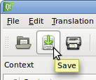

|
 |
Fig. 70 Abrindo un ficheiro de tradución (.ts)
Axuda coas traducións
Por mor da constante xeración de nova información por parte do noso equipo de desenvolvemento e á necesidade de comunicarlla a toda a comunidade e en diferentes idiomas, decidimos facer unha convocatoria particular a todas aquelas persoas con habilidade para traducir textos dun idioma para outro. Dentro dos tipos de documentos que constantemente necesitamos traducir atopanse:
Para as noticias e os tutoriais, abonda só co teu desexo de axudar e que te poñas en contacto con nos, para que nos digas que texto en particular queres traducir o se desexas que che asignemos algún: sempre temos algo para traducir.
Por outro lado, En que consiste a compatibilidade de idioma? Expresado
en termos sinxelos, tratase da capacidade dun aplicativo para mostrar
todas as súas mensaxes nun idioma en particular. Si estás interesado en
que o Tupí teña compatibilidade co chinés, co árabe, co francés
ou con calquera outro idioma que sexa de teu interese, entón atopaste no
lugar axeitado para colaborar.
Para o caso dos ficheiros de compatibilidade de idioma, é necesario que
teñas algúns coñecementos das ferramentas e os procedementos que
utilizamos para crear e administrar este tipo de ficheiros. Segue as
seguintes instrucións, e poderás converterte nun dos nosos máis
importantes tradutores:
Nota: Neste momento a tradución da interface (a compatibilidade de idioma) está ser feita por Miguel Anxo Bouzada do Proxecto Trasno, empregando Qt 4 Linguist e Virtaal. Se queres participar do traballo de tradución, é che resulta máis doado, podes contactar directamente comigo ou darte de alta na lista de Proxecto Trasno.
Aprende que é Linguist e como funciona.
Comecemos polo principio, Tupí é un aplicativo de software
desenvolvido coa biblioteca Qt, escrita en linguaxe C++. A boa noticia é
que non tes que aprender nin Qt nin C++ para axudarnos a traducir.
Porén, é importante que teñas en conta que Qt non consiste só nunha
biblioteca de desenvolvemento, senón que tamén inclúe varias ferramentas
adicionais que facilitan o desenvolvemento de aplicativos. Unha delas é
Linguist, un sinxelo programa que ven incluído na instalación de Qt e que permitirache xerar a compatibilidade con novos idiomas para o Tupí.
Fig. 68 Aplicativo «Linguist»
Se xa tes instalado Qt no teu computador, seguramente xa tes instalado Linguist. Busca o acceso ao aplicativo no menú principal do teu entorno gráfico, na sección de Programación:
Fig. 69 Iniciando o aplicativo «Linguist»
A materia prima desta utilidade é un ficheiro de extensión «.ts», a partires do que poderás traducir todas as mensaxes que compoñen o Tupí ao idioma que ti queiras. Unha boa noticia, é que non tes que comezar desde cero, pois xa contamos cun ficheiro (tupi_es.ts) no noso sitio web. Descárgao y renomeao conforme ao idioma ao que queiras traducilo. Por exemplo, se queres crear a compatibilidade para «italiano», entón renomeao a tupi_it.ts e ábreo co programa «Linguist» así:
|
|
Fig. 70 Abrindo un ficheiro de tradución (.ts)
Imos botarlle unha ollada aos compoñentes máis importantes do programa, especificamente aos que imos empregar. O primeiro é o listado de contextos. O seu nome soa complexo, mais non é outra cousa que unha lista de grupos de palabras. É dicir, cada elemento da lista que vemos na figura, simplemente representa un grupo de palabras asociadas a ese contexto.

Fig. 71 Listado de contextos
O seguinte compoñente, é a lista las palabras ou mensaxes asociadas a un contexto. Estas mensaxes son os que aparecen no Tupí e son os que debemos traducir. Cada contexto pode ter un número variábel de mensaxes que traducir. Independente delo, todos os textos deben ser traducidos.

Fig. 72 Listado de palabras dun contexto
Ata o momento, xa temos localizados os nomes dos grupos (contextos) e o listado de palabras por cada contexto. Agora, localicemos a parte máis importante da ferramenta, o formulario de traducións:
Fig. 73 Formulario de traducións
Agora vexamos en detalle cales dos campos debemos ter en conta, no formulario de traducións:

Fig. 74 Formulario de traducións en detalle
O cadro marcado en vermello conten o texto que debemos traducir; neste caso particular, a palabra «Pencil». O cadro marcado en verde bconten o espazo onde debemos colocar a tradución do texto. Neste caso particular de tradución ao español: «Lápiz».
Moi ben, xa vimos un exemplo puntual, agora fagamos unha descrición
xeral de todo o proceso: Unha vez aberto o ficheiro de tradución (ex:
tupi_it.ts), debemos seleccionar un a un, todos os contextos (1). Por cada contexto seleccionado, teremos que premer sobre cada unha das palabras na lista da segunda columna da interface (2), a fin de traducilas desde o formulario situado na parte inferior (3).
Unha vez teñamos recorrido todos os contextos e xa non queden máis
palabras para traducir, teremos finalizada a tarefa.

Fig. 75 Compoñentes principais do aplicativo «Linguist»
Para rematar, teremos que gardar os cambios e enviar o noso ficheiro por correo ao equipo de desenvolvemento para que o inclúa nas futuras versións do Tupí.
|  |  |
Fig. 76 Gardando o proxecto de tradución (.ts)
Se queres aprender máis sobre o «Linguist», podes consultar o manual oficial aquí: